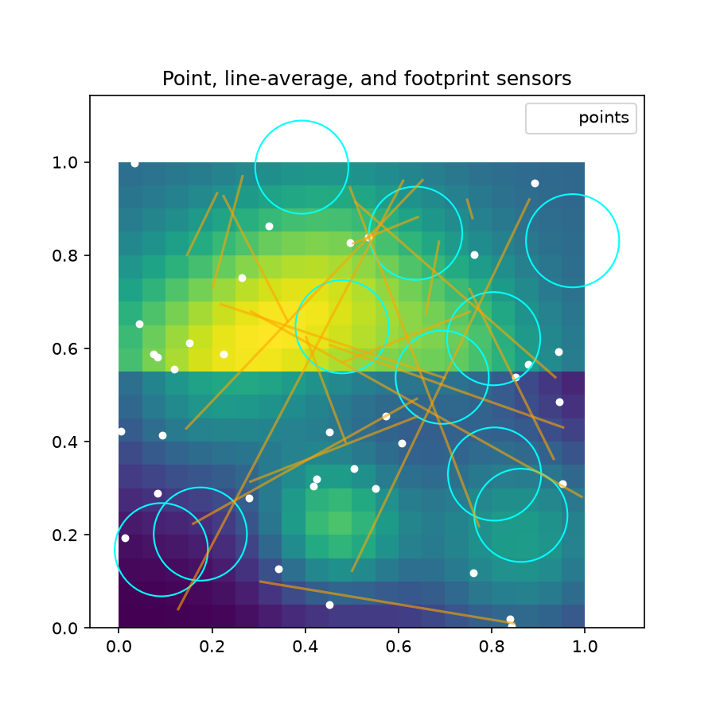
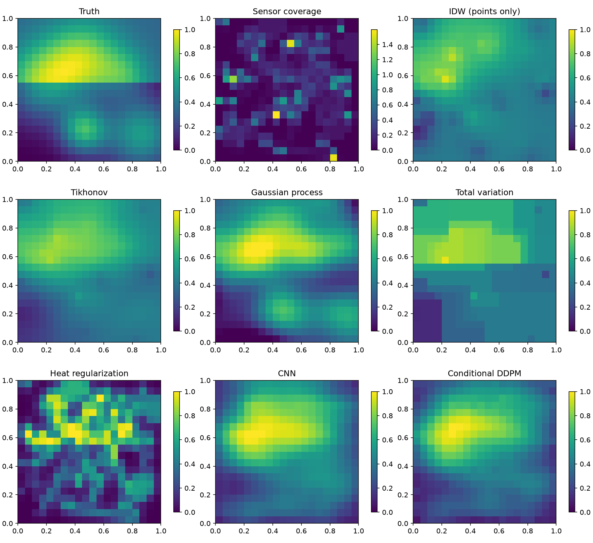
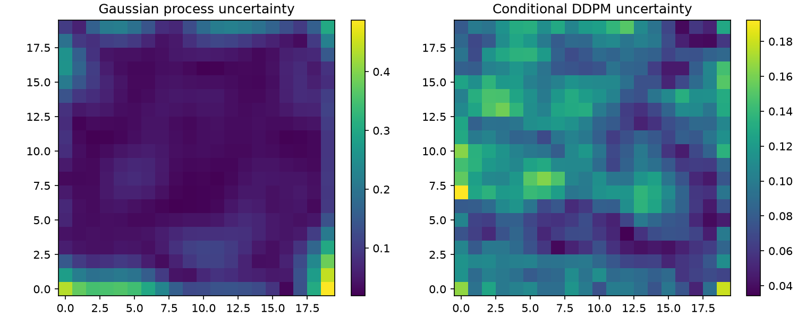
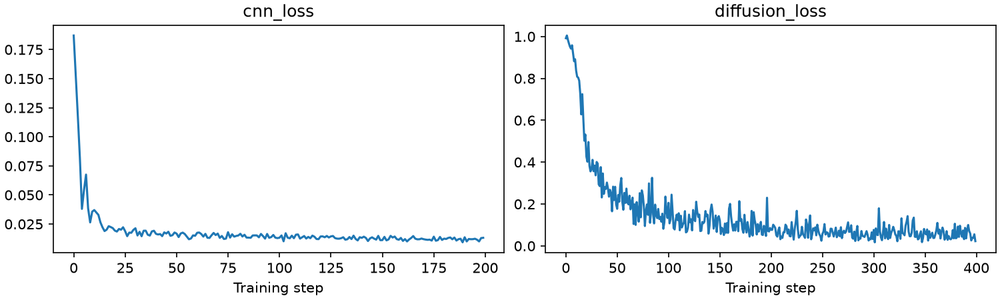
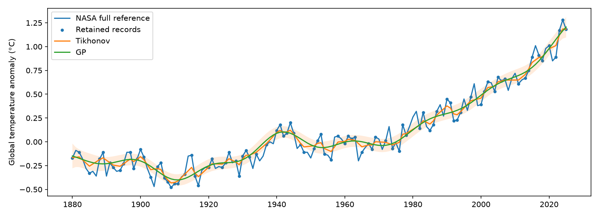
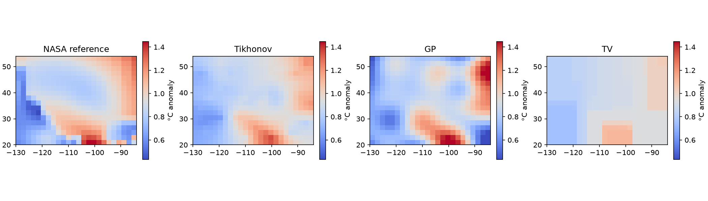
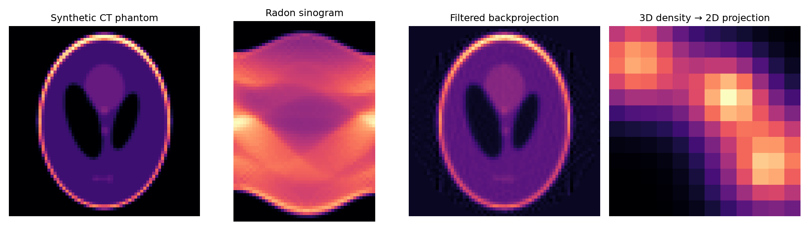

Simulated front field
IDW sees points only; other estimators see all sensors. Scores are a demo, not a tuned ranking.


| Model | Field RMSE | Measurement RMSE |
|---|---|---|
| IDW (points only) | 0.1495 | 0.0888 |
| Tikhonov | 0.1049 | 0.0555 |
| Gaussian process | 0.0724 | 0.0172 |
| Total variation | 0.1024 | 0.0354 |
| Heat regularization | 0.2506 | 0.0027 |
| CNN | 0.1323 | 0.0887 |
| Conditional DDPM | 0.1258 | 0.0787 |
GP: conditional standard deviation under fixed Gaussian assumptions. DDPM: uncalibrated sample spread.


Real observations with a simulated missing-year mask. Reconstruction noise is assumed, not NASA's official uncertainty.

NASA GISTEMP regional 2019–2023 mean. The reference is an analyzed product; point, line, and footprint observations are simulated.

Simulated Shepp–Logan phantom, filtered backprojection, and a projection of a simulated 3D density field. A single projection cannot identify the volume.
